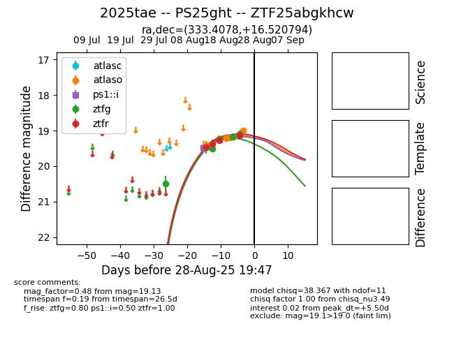

Target 2025tae at 2025-08-21 10:47, see:
FINK: fink-portal.org/ZTF25abgkhcw
Lasair: lasair-ztf.lsst.ac.uk/objects/ZTF25abgkhcw
ALeRCE: alerce.online/object/ZTF25abgkhcw
TNS: wis-tns.org/object/2025tae
YSE: ziggy.ucolick.org/yse/transient_detail/2025tae
alt names
ZTF25abgkhcw (ztf,alerce)
2025tae (tns,yse)
PS25ght (panstarrs)
coordinates:
equatorial (ra, dec) = (333.4078,+16.52078)
galactic (l, b) = (77.0458,-31.94995)
photometry
last ps1::i=19.50, ztfg=19.47, ztfr=19.28
1 ps1::i, 1 ztfg, 6 ztfr detections
